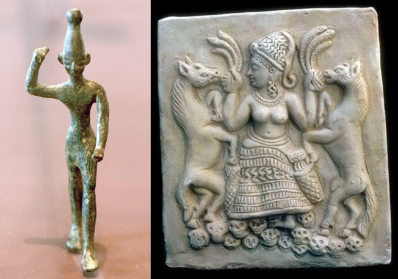
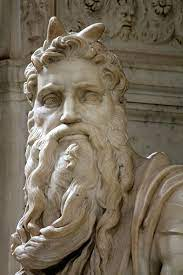
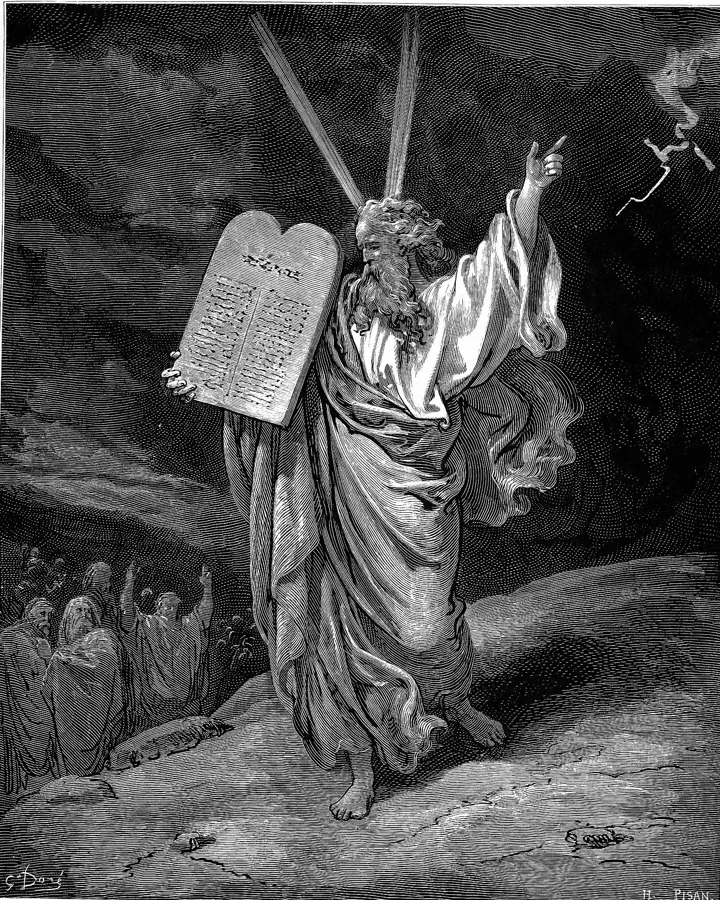

| 讀 | 默想 |
|---|---|
| 出埃及記34:1-9 | |
| 1 耶和華吩咐摩西說：「你要鑿出兩塊石版，和先前你摔碎的那版一樣；其上的字我要寫在這版上。 2 明日早晨，你要預備好了，上西奈山，在山頂上站在我面前。 3 誰也不可和你一同上去，遍山都不可有人，在山根也不可叫羊群牛群吃草。」 |
神吩咐摩西「鑿出兩塊石版，和先前你摔碎的那版一樣」（1節），表明神要重申祂所立的約，接納悖逆的百姓。 在第一次立約時，十誡的石版和字都是「神的工作」（三十二16）。現在神重新立約（10節），卻要摩西「鑿出兩塊石版」（1節），由神重新寫上十誡（28節）。在神的計畫裡，人可以參與做一些外表的東西，但內容必須由神自己來決定。 在第一次立約時， 摩西擔任中保，百姓參與了立約儀式（二十四4-11）。現在神只讓摩西代表百姓上山，連約書亞都不得陪同，百姓只能戰兢遠觀神的作為，與神的關係又回到了他們剛到西奈山的光景（出十九12-13）。 |
|
4 摩西就鑿出兩塊石版，和先前的一樣。清晨起來，照耶和華所吩咐的上西奈山去，手裡拿著兩塊石版。 5 耶和華在雲中降臨，和摩西一同站在那裡，宣告耶和華的名。 |
在第一次立約時，有雷轟、閃電、密雲、角聲、煙、火、地震（十九16-18）。現在百姓觸犯了誡命和典章，「耶和華在雲中降臨」卻是非常安靜。 因為律法已經「叫人知罪」（羅三20），所以雖然在這樣的安靜中，剛蒙赦免之恩的百姓卻對神更加敬畏了。我們也常常犯罪，但每次被神挽回之後，對神的敬畏和感恩就會加深一分，因為「在禰有赦免之恩，要叫人敬畏禰」（詩一百三十4）。 「手」的原文是單數（三十二15）。摩西「手裡拿著兩塊石版」，表明這石版並不大，一隻手就可以拿起兩塊石版。 |
|
6 耶和華在他面前宣告說：「耶和華，耶和華，是有憐憫有恩典的 神，不輕易發怒，並有豐盛的慈愛和誠實， 7 為千萬人存留慈愛，赦免罪孽、過犯，和罪惡，萬不以有罪的為無罪，必追討他的罪，自父及子，直到三、四代。」 「慈愛」這個字原文發音為「Chesed」翻譯為任何語言都很難以單一一個字詞翻譯。它的意思是「在盟約中，雖然一方違約了，另一方仍然堅持守約的慈愛」 請參閱六十週年刊牧師的「認識上帝慈愛的屬性」一文，這個「慈愛」就是上帝守約的慈愛（Chesed) |
請閱讀三十三章13～19節 神自己宣告自己的屬性「宣告耶和華的名」，就是回應摩西的請求，將自己的「道」指示給摩西，好讓他更深地認識神 （三十三13-19）。也就是神做事的法則。只有認識並遵循神做事的法則，我們的事奉才可能蒙神悅納（三十三13）。 「耶和華，耶和華」，把神的名字重複了兩遍，所表達的意思就如「我是阿拉法，我是俄梅戛；我是首先的，我是末後的；我是初，我是終」（啟二十二13；一8），又如「耶穌基督，昨日、今日、一直到永遠是一樣的」（來十三8）。 面對悖逆的百姓，神卻首先宣告自己「是有憐憫有恩典的神，不輕易發怒，並有 豐盛的慈愛和誠實 ，為千萬人存留慈愛，赦免罪孽、過犯，和罪惡」。當人帶著罪孽來到神面前，心裡恐懼戰兢的時候，神卻向他們說出恩典的話，這是何等的寶貴而深刻！ 「耶和華在他面前宣告說」（6節），原文是「耶和華在他面前經過，宣告」。神在這裡的宣告，成為神百姓的信仰宣言，舊約多次引用了這裡宣告的神的屬性（民十四18；尼九17；詩八十六15，一百零三8；一百四十五8；珥二13；拿四2；鴻一3） |
|
8 摩西急忙伏地下拜， 9 說：「主啊，我若在你眼前蒙恩，求你在我們中間同行，因為這是硬著頸項的百姓。又求你赦免我們的罪孽和罪惡， 以我們為你的產業 。」 |
摩西聽懂了神的話，所以立刻求神「赦免我們的罪孽和罪惡」，求祂繼續與百姓同行，重新收納他們為自己的「產業」。 摩西的禱告，表明他真 認識神是滿有憐憫、恩典和慈愛的神 。所以百姓的「硬著頸項」，反而成為摩西求神施恩的理由。「因為這是硬著頸項的百姓」，所以更需要神的同在，施行恩典的赦免和公義的管教。 |
| 禱告：親愛的天父上帝，祢是守約施慈愛的神。我感謝祢，祢以這樣的守約的愛，吸引祢的百姓能夠從內心真實的悔改歸向祢。即使違約了、犯罪了，不聽祢的話，祢仍然堅定祢的盟約。祢差祢獨一的兒子耶穌基督，道成肉身，成為罪的形象，為我的罪死在十字架上，顯明祢守約施慈愛的屬性。原來祢早已經對以色列百姓，宣告祢的守約的慈愛屬性。主阿！我也渴望能夠認識祢、經歷祢，懇求祢教導我，如何能夠將祢這樣的守約施慈愛的屬性向世人宣揚。奉耶穌基督的名禱告，阿們。 | |
| 讀 | 默想 |
|---|---|
| 出埃及記34:10-26 | |
| 10 耶和華說：「我要立約 ，要在百姓面前行奇妙的事，是在遍地萬國中所未曾行的。在你四圍的外邦人就要看見耶和華的作為，因我向你所行的是可畏懼的事。 | 「我要立約」，不是要立新的內容，而是重申原來的約。正如「新約」（耶三十一31-34）也不是有新的內容，而是有新的權能。人可以改變，環境可以改變，但是「神的話語安定在天」（詩一百一十九89），始終不改變。 |
| 11 「我今天所吩咐你的，你要謹守。我要從你面前攆出亞摩利人、迦南人、赫人、比利洗人、希未人、耶布斯人。 12 你要謹慎，不可與你所去那地的居民立約，恐怕成為你們中間的網羅； 13 卻要拆毀他們的祭壇，打碎他們的柱像，砍下他們的木偶。 |
徹底清除一切偶像崇拜的痕跡，需要極大的信心，因為古人相信毀壞聖物會大大冒犯神明，導致神明的報應。以色列人如果能徹底清除偶像，證明他們完全信靠神。 與迦南人「立約」（12節）的儀式包括承認他們的神，也就是「敬拜別神」（14節）。 「柱像」指代表迦南男神的石柱。 「木偶」指代表迦南女神亞舍拉的木柱或樹木（申十六21），通常立於巴力祭壇旁邊（士六25）。迦南地的偶像是將淫亂、性的混亂以宗教敬拜神明的方式合理化。上帝不要以色列百姓陷入這種邪淫的宗教文化。 |
|  | 左圖：巴力和亞納特。在迦南的宗教中，巴力（Baal）是雨水與農作物的神，每年的雨季就是巴力戰勝大水與海洋帶來的雨水，旱季就是巴力被死亡與乾旱之神摩特（Mot）殺害。而巴力的配偶亞納特（Anath）把摩特打敗之後，巴力又復活，重新帶給大地雨水。迦南人認為秋季的雨量與春季的作物發芽，都是因為巴力與其配偶交合所帶來的繁殖力量。因此，行淫成為巴力崇拜儀式中的重要一環，關係到牲畜的多產、農業的豐收，所以為了促進巴力與其配偶繁殖的力量，迦南人要與神廟中的廟妓行淫。 |
| 14 不可敬拜別神；因為耶和華是忌邪的 神，名為忌邪者。 | 「忌邪」原文是「嫉妒」，就像一位丈夫不能容忍和別人分享自己所愛的妻子，神也不會甘心與「別神」分享自己所救贖的百姓，容忍自己的百姓走向滅亡。 |
| 15 只怕你與那地的居民立約，百姓隨從他們的 神，就行邪淫，祭祀他們的神，有人叫你，你便吃他的祭物， 16 又為你的兒子娶他們的女兒為妻，他們的女兒隨從他們的神，就行邪淫，使你的兒子也隨從她們的神行邪淫。 |
神禁止百姓與迦南人通婚、吃喝，是為了避免他們參與迦南人淫亂的偶像崇拜，以致在肉體和靈性上都「行邪淫」。 當時的「祭物」在獻祭後都會被當場吃掉，所以「吃他的祭物」（15節），就是直接參與淫亂的偶像崇拜。 神重申的第一點，就是要與迦南人徹底分別 （11-16節）。以色列人造金牛犢，是因為受以前埃及遍地偶像的影響。他們所要去的迦南地的居民不但拜偶像，而且生活比埃及人更加敗壞 。所以神很明確地在各個細節上要求百姓與迦南人徹底分別。 |
| 17 「不可為自己鑄造神像。 18 「你要守除酵節，照我所吩咐你的，在亞筆月內所定的日期吃無酵餅七天，因為你是這亞筆月內出了埃及。 19 凡頭生的都是我的；一切牲畜頭生的，無論是牛是羊，公的都是我的。 20 頭生的驢要用羊羔代贖，若不代贖就要打折牠的頸項。凡頭生的兒子都要贖出來。誰也不可空手朝見我。 |
神重申的第二點，就是「不可為自己鑄造神像
」。神的誡命是「不可為自己雕刻偶像」 神重申的第三點，就是「要守除酵節」（18-20節）。逾 越節和除酵節是連在一起的 ，但神要強調的不是「逾越節」（25節）的實際，而是「除酵節」（18節）的實際。神特別提醒這些拜過金牛犢的以色列人：已經脫離埃及的百姓不能再有埃及的生命，必須活在除酵的生活裡，嚴肅地對付罪。對於我們基督徒而言，要記得我們是耶穌基督重價買贖回來的。 |
| 21 「你六日要做工，第七日要安息，雖在耕種收割的時候也要安息。 22 在收割初熟麥子的時候要守七七節；又在年底要守收藏節 。 23 你們一切男丁要一年三次朝見主耶和華─以色列的 神。 24 我要從你面前趕出外邦人，擴張你的境界。你一年三次上去朝見耶和華─你 神的時候，必沒有人貪慕你的地土。 25 「你不可將我祭物的血和有酵的餅一同獻上。逾越節的祭物也不可留到早晨。 26 地裡首先初熟之物要送到耶和華─你 神的殿。不可用山羊羔母的奶煮山羊羔。」 |
神重申的第四點，就是藉著守安息日和三大節期
，操練信心和順服。 神設立安息日，是為了讓我們享受與神同在的平安與滿足。 三大節期的目的，是為了讓百姓持續思想，我一切的收穫是從神而來。 除酵節：我是神救贖的；七七節：麥子是神使它生長成熟的；收藏節：要為豐收感恩。 人與神的關係是否正常，不只是根據主日崇拜是否敬虔，而是根據神在我們日常生活中「先求祂的國和祂的義」（太六33）。「因為，你們的財寶在哪裡，你們的心也在那裡」（路十二34）。 「不可用山羊羔母的奶煮山羊羔」：迦南的文獻說明這是一種法術（這本源於迦南人的豐收儀式：用奶煮熟了山羊羔然後切塊，分散於田地上使土地肥沃豐收）。 申 14:21 也有類似的禁令。 這經文的意思是，豐收是從神而來，不可隨從迦南地的偶像法術。 |
| 禱告：親愛的天父上帝，我要感謝讚美祢。祢是立約的神，祢又是忌邪的神。祢是使我有力量拒絕罪惡的神。祢是聖潔的神，祢吩咐我們要分別為聖歸屬於祢。我們是祢重價買贖回來的。我願意將我內心所有的偶像以及偶像的權勢完全的清除。求祢鑒察我的心思，用祢的話語，潔淨我的意念。我願意在敬拜祢的服事中享受祢的供應和滿足。奉耶穌基督的名禱告，阿們。 | |
| 出埃及記34章27～35節 | |
|
27 「耶和華吩咐摩西說：『你要將這些話寫上，因為我是按這話與你和以色列人立約。』」 28 「摩西在耶和華那里四十晝夜，也不吃飯也不喝水。耶和華將這約的話，就是十條誡，寫在兩塊版上。」 |
神針對以色列人拜金牛犢的失敗，重申了誡命和典章的四個重點，然後由摩西「將這些話寫上」（27節）。 「十條誡」仍然由神自己親自「寫在兩塊版上」。雖然百姓失敗了，但神所立的約，誡命和典章絕不改變。 這是摩西在神面前的第二個「四十晝夜」（申十10），也是神第二次對百姓進行徹底的試驗。第一個「四十晝夜」（二十四18）期間金牛犢的失敗，學會了在神面前安靜等候，神就用摩西「面皮發光」（30節）來印證祂的重新接納。 |
| 29 「摩西手裡拿著兩塊法版下西奈山的時候，不知道自己的面皮因耶和華和他說話就發了光。」 30 「亞倫和以色列眾人看見摩西的面皮發光就怕挨近他。」  米開朗基羅製作的摩西塑像 |
摩西第一次下山時，面皮並沒有發光，因為當時百姓已經毀了約。現在摩西的「面皮發光」，印證了神對百姓的重新收納，並且神應允了他的禱告：「求祢顯出祢的榮耀給我看」（三十三18）。 摩西的面皮上帶著神的榮耀，但他卻不知道自己臉上滿有榮光。真正的屬靈偉人就像摩西，「為人極其謙和，勝過世上的眾人」（民十二3），不是知道自己「面皮發光」，所以有教養地作謙虛狀；而是根本不知道自己的「面皮發光」，只知道「在罪人中我是個罪魁」（提前一15），自己不過是神「無用的僕人」（路十七10）。 「發光קָרַן」原文的字根是「角קֶרֶן」，意思是「發出光輝，顯出或長出角」。「角」在古代中東是力量的象徵，古人常用神明冠冕上的光芒或角來象徵其權能。早期西方教會的聖經學者耶柔米（Jerome，主前347-420年）在翻譯拉丁文武加大譯本時，把「發了光」直譯為「長了角」，以表達 原文的雙關意義 。因此，在許多中世紀西方教會的畫像和雕塑中，常常看到長角的摩西。但在使用希臘文七十士譯本的東正教地區，就看不到長角的摩西。 詩69:31 這便叫耶和華喜悅，勝似獻牛，或是獻有角<07160> 有蹄的公牛 |
| 31 「摩西叫他們來；於是亞倫和會眾的官長都到他那裡去，摩西就與他們說話。」32 「隨後以色列眾人都近前來，他就把耶和華在西奈山與他所說的一切話都吩咐他們。」33 「摩西與他們說完了話就用帕子蒙上臉。」 | 摩西「用帕子蒙上臉」，一方面是「以色列人因摩西面上的榮光，不能定睛看他的臉」（林後三7）；另一方面是因為「這榮光原是漸漸退去的」（林後三7），摩西不想讓以色列人「定睛看到那將廢者的結局」（林後三7）。 |
|
34 「但摩西進到耶和華面前與他說話就揭去帕子，及至出來的時候便將耶和華所吩咐的告訴以色列人。」 35 「以色列人看見摩西的面皮發光。摩西又用帕子蒙上臉，等到他進去與耶和華說話就揭去帕子。」  摩西攜帶法版下山，出自多雷的《聖經插圖》，1865年。在多雷的插圖中，他採用類似角的兩道光束來描述這一字雙義。 |
從這以後，摩西每次進入會幕領受神的話語，就「揭去帕子」（34節），以致「面皮發光」。神用榮耀印證摩西是神的代表，就像月亮反映太陽的光輝，為太陽作見證。 我們每天藉著讀經、禱告與主親近，也就是在主面前「揭去帕子」，「敞著臉得以看見主的榮光，好像從鏡子裡返照」（林後三18）。因著神話語的光照，我們「就變成主的形狀，榮上加榮，如同從主的靈變成的」（林後三18），成為基督在地上的見證。 「那吩咐光從黑暗裡照出來的神，已經照在我們心裡，叫我們得知神榮耀的光顯在耶穌基督的面上」（林後四6），我們若不在主面前「揭去帕子」，就不能「變成主的形狀」（林後三18），在地上活出「主的榮光」（林後三18）。 |
| 親愛的天父上帝我感謝祢 祢是向人說話的神。祢和摩西說話之後， 他的臉上就有上主您的榮光。 叫人能夠看出，祢的僕人與他人的不同。 我感謝祢讚美祢。 祢的百姓雖然違背了祢的約，祢還是向他們守約施慈愛。垂聽祢僕人在祢面前的禱告。我也來到祢的面前。為我的家人OOO,和我的小組員OOO，為他們的靈魂警醒守望，懇求祢垂聽我的禱告，使我得見祢的榮光。奉耶穌基督的名禱告，阿們。 | |